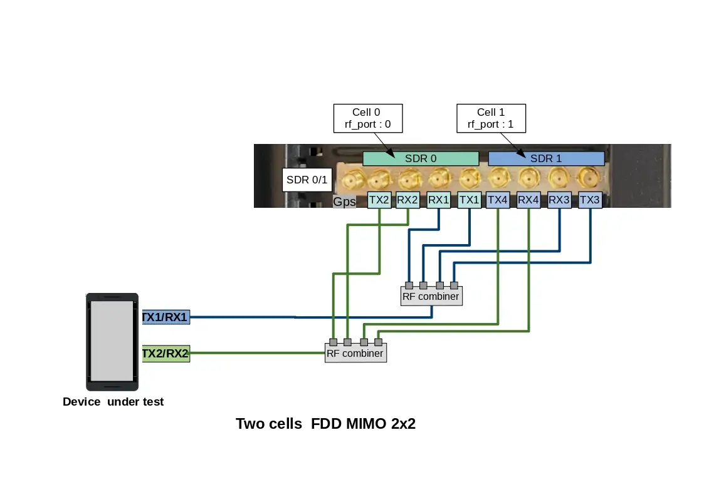

AMARI Callbox Advanced is a 3GPP compliant eNodeB, gNodeB, EPC and 5GC allowing functional and performance testing of NR, LTE, LTE-M and NB-IoT devices. It also includes an integrated IMS server as well as an eMBMS gateway for VoLTE and eMBMs testing.
The Callbox Advanced is a turnkey solution running on Fedora 42 operating system. It embeds two PCIe SDR100 cards, all software components and licenses required to emulate your 4G/5G network.
This document describes the first steps to start and configure your Amarisoft Callbox. For advanced configurations and testing, please refer to the application notes and other documents available under extranet.amarisoft.com or under the /root/<components>/doc/ folders of your Callbox.
Plug the external power cable provided with the Callbox in the AC-in Connector and place the toggle switch located in the rear panel on position "1", then press the Power on button on the top of the front panel to turn the system on.
The led will light up blue once Callbox is powered ON .
Power adapter specifications:
Input: 100~240 V AC, 50~60 Hz
The Callbox is delivered with a test sim card that is already provisioned in the EPC/5GCN database. No additional configuration is required for authenticating devices using this SIM card.
SIM card specifications:
|
Note: It is possible to use other SIM cards for your testing. In that case please See Provisioning of new SIM cards for more details. |
The Callbox Advanced is delivered with two PCIe Software Defined Radio (SDR) cards supporting 100Mhz MIMO 4x4 each.
Each PCIe SDR card has four RX and four TX SMA connectors plus one GPS connector.
Rx1/Rx2/Rx3/Rx4 are the receive antenna ports.
Tx1/Tx2/Tx3/Tx4 are the transmit antenna ports.
GPS is used for connecting an external GPS clock. See trx_sdr.pdf document for more details.
|
Note: Each physical PCIe SDR card (100Mhz MIMO 4x4) is actually composed of two independent RF chips. Each chip is mapped to a separate logical SDR device and can handle 100MHz 2x2 MIMO as depicted below |
For basic scenarios running just one cell 2X2 MIMO as instance, the eNodeB or gNodeB will only use one SDR device (#0). In that case, it’s not required to connect all SMA connectors to your device.
For others scenarios such as Carrier aggregation, 8T8R, Multi cells or EN-DC tests, several SDR cards are used and combined.
In that case, three important points have to be taken into account for connecting your device to the Callbox:
The following section describes how to connect and configure your Callbox when device is connected using RF cables , i.e in wired test conditions.
|
Note: When using RF combiners, unused ports of the combiners must be terminated with RF terminator or absorber especially when using frequency above 2.5Ghz. Otherwise big insertion losses may happen and downgrade the RF performances. |
The selection of the SDR card is made in the enb configuration file, per cell, using the parameter "rf_port". See Cell and SDR mapping for more details.
|
Note: the default |
Examples of SDR card combination and RF cabling are provided in the following section.
|
Note: For SISO test, RF connections between DUT antenna2 and Callbox Tx2/RX2 are not required |
Note: in TDD mode, as both TX and RX are sent on the same channel, only TX1 and TX2 ports are needed.
However, with Amarisoft SDR card, it’s possible to force the DL signal reception on RX port and Uplink signal transmission on TX port when rx_antenna: "rx" is set in the RF driver configuration file.
This improves the performance of the SDR card as we don’t have to switch the RF several times per radio frame.
|
When |
This RF cabling corresponds to a Carrier aggregation scenario (2CC) or 2 interfreq/interBand neigbhor cells as instance

This RF cabling corresponds to an EN-DC scenario with one LTE cell FDD 2x2 MIMO and one NR cell FDD 4x4 MIMO
In this case three consecutive SDR devices "SDR0 + SDR1 + SDR2" are used. LTE cell 0 (rf port 0) is mapped to SDR0 and NR cell (rf port 1) is mapped to SDR1 & SDR 2
Note: For NR TDD band, set rx_antenna: "rx"
In conducted mode, TX and RX gains must be adjusted according to your setup. See TX/RX gain setting for more details.
The AMARI Callbox Advanced motherboard has 4 Ethernet ports:
To get access to the callbox, there are two options:
Once you are remotely connected, you can modify the static IP address allocated by editing the file
/etc/sysconfig/network-scripts/ifcfg-enp7s0 or /etc/sysconfig/network-scripts/ifcfg-enp0s31f6 depending on the used motherboard. Thus, future connections to the Callbox can be made using this static address. Note: for Fedora version >= 42 the file to edit is /etc/NetworkManager/system-connections/ifcfg-enp7s0.nmconnection or /etc/NetworkManager/system-connections/ifcfg-enp0s31f6.nmconnection depending on the used motherboard.
|
Note: 10Gbps Ethernet port must be used when data rate between external IP application and UEs exceeds 1Gbps. |
To login as root, please use root/toor as login / password.
There is also a user account with user/resu as login/password.
Note: The Amarisoft software suit is installed and executed under root account.
The web GUI to display logs is available through web access at the following URL:
http://<IP address>/
To add authentication to the web portal:
Edit /etc/httpd/conf/httpd/conf and look for <Directory "/var/www/html"> section.
Inside it, add AuthConfig to AllowOverride directive so that it becomes AllowOverride None AuthConfig.
Then restart HTTP daemon:
service httpd restart
Create /var/www/html/lte/.htaccess file with following content:
AuthType Basic AuthName "Amarisoft Web GUI" AuthUserFile /etc/httpd/.htpasswd Require valid-user
To add a user and its password, type the following command:
htpasswd -c /etc/httpd/.htpasswd <username>
Callbox is configured to provide an automatic LTE service. At each reboot of the PC, LTE network is turned on automatically.
|
Note that even if the service is named "LTE" it actually serves both Radio access technologies: 4G LTE and 5G NR |
The default configuration is : one cell, LTE band 7, 20 MHz bandwidth and MIMO 2x2.
You can check the LTE service status this way:
service lte status
The command will return "active (running)" status if service is running
You can stop all LTE components this way:
service lte stop
You can start them again this way:
service lte start
You may also prevent them to start at boot time:
systemctl disable lte
NB: lte service remains enable until next reboot
NB2: this command is not available on Ubuntu version <= 14
You may enable service at boot time this way:
systemctl enable lte
NB: lte service remains disable until next reboot
NB2: this command is not available on Ubuntu version <= 14
The default file used by the lte automatic service for configuring the eNodeB and gNodeB is enb.cfg (available under /root/enb/config directory).
This file aims to set eNodeB and gNodeB parameters such as frequency, cell bandwidth, number of layer and others.
Note: Both eNodeB and gNodeB are built in the same component named enb (for legacy reason).
Please note that this file is a symbolic link to real configuration file as depicted below
Some examples of configuration file (for 5G NSA, Carrier aggregation with 2CC or 3CC and multi-cell as instance) are provided in Amarisoft releases as a starting point.
To change the eNodeB/gNodeB configuration and select one of these files, update the enb.cfg symbolic link using the "ln -sfn <config file> enb.cfg" command
For example, if you want to configure your callbox in 4G/5G non-standalone mode (NSA), you just need to enter "ln -sfn gnb-nsa.cfg enb.cfg" command
|
Default cell configuration is one Cell, LTE band 7, 20MHz bandwidth, MIMO mode |
Once enb.cfg configuration file has been selected (as a starting point), you can now edit it and customize key parameters such as:
All parameters available are described in the lteenb.pdf document.
You will also find at the beginning of configuration files a list of DEFINE that can be easily tuned
#define TDD 0 // Values: 0 (LTE FDD), 1(LTE TDD) #define NR_TDD 1 // Values: 0 (NR FDD), 1(NR TDD) #define NR_TDD_CONFIG 1 // Values: 1, 2 or 3 #define N_RB_DL 100 // Values: 6(1.4MHz), 25(5MHz), 50(10MHz), 75(15MHz), 100(20MHz) #define N_ANTENNA_DL 2 // Values: 1 (SISO), 2 (MIMO 2x2), 4 (MIMO 4x4) #define NR_BANDWIDTH 40 // NR cell bandwidth.
For example, to configure a 10Mhz 2x2 MIMO TDD cell + 50Mhz 2x2 MIMO NR TDD cell, just set the #defines this way:
#define TDD 1 // Values: 0 (LTE FDD), 1(LTE TDD)
#define NR_TDD 1 // Values: 0 (NR FDD), 1(NR TDD)
#define NR_TDD_CONFIG 1 // Values: 1, 2 or 3
#define N_RB_DL 50 // Values: 6(1.4MHz), 25(5MHz), 50(10MHz), 75(15MHz), 100(20MHz)
#define N_ANTENNA_DL 2 // Values: 1 (SISO), 2 (MIMO 2x2), 4 (MIMO 4x4)
#define NR_BANDWIDTH 50 // NR cell bandwidth.
As described in the Hardware setup section, it’s possible to declare multiple cells on different bands by using up to two PCIe SDR card, which correspond to eight logical SDR devices.
In the enb.cfg file, for each cell declared in the cell_list array, rf_port field must be set to select the SDR card(s) that will broadcast the cell signal.
Note: an rf_port is composed of N consecutive SDR card(s) depending of the number of downlink antenna configured for the cell.
n_dl_antenna: 1), an RF port is composed of N=1 logicial SDR card
n_dl_antenna: 2), an RF port is composed of N=1 logicial SDR card
n_dl_antenna: 4), an RF port is composed of N=2 consecutive logicial SDR cards (one PCIe SDR card)
n_dl_antenna: 8), an RF port is composed of N=4 consecutive logicial SDR cards (two PCIe SDR card)
*Note: 8 layers are only supported in LTE, in NR, 8T8R cell is supported with up to 4 layers.
Exemple of one 8T8R cell
This means that for an eNodeB/gNodeB configuration using 3 cells 2x2 MIMO, we will have :
However, if the first cell is 4x4 MIMO and second cell is 2x2 MIMO, we will have
Example of NSA cell configuration (from gnb-nsa.cfg reference file) where cell#0 (LTE band1 2x2 MIMO) and cell#1 (NR band n78 2x2MIMO) use the SDR0 and SDR1 respectively.
-
Cells and rf_port declaration in gnb-nsa.cfg:
/* list of cells */
cell_list: [
{
rf_port: 0,
/* Broadcasted PLMN identities */
plmn_list: [
"00101",
],
#if TDD == 1
dl_earfcn: 40620, /* 2593 MHz (band 41) */
#else
dl_earfcn: 300, /* DL center frequency: 2140 MHz (Band 1) */
#endif
n_id_cell: 1,
cell_id: 0x01,
tac: 0x0001,
root_sequence_index: 120, /* PRACH root sequence index */
en_dc_scg_cell_list: [
{ cell_id: 0x02 }
],
},
], /* cell_list */
nr_cell_list: [
{
rf_port: 1,
cell_id: 0x02,
#if NR_TDD == 1
band: 78,
dl_nr_arfcn: 632628, /* 3489.42 MHz */
#else
band: 5,
dl_nr_arfcn: 176300, /* 881.5 MHz */
#endif
},
], /* nr_cell_list */
TX and RX antenna gain values must be customized in order to avoid saturation when set too high or Bler when set too low. Those two values actually depend on your setup:
TX and RX gain values are defined in RF configuration file located under /root/enb/config/rf_driver directory.
To know which files is used by LTE service, just look at enb.cfg file.
Example:
include "rf_driver/config.cfg",
When the device under test is connected to the callbox using RF cables, the recommended RX and TX antenna gain values are :
tx_gain: 60.0, /* TX gain (in dB) */ rx_gain: 0.0, /* RX gain (in dB) */
If physical RF attenuators (or RF combiners) are used, additional gain must be added to these default values equivalent to the path loss introduced
|
Note: max SDR input is -10 dBm, max SDR output is 5dBm (depending on the frequency). |
In Wireless test conditions (i.e when LTE antennas are used), the recommended RX and TX antenna gain values are :
tx_gain: 90.0, /* TX gain (in dB) */ rx_gain: 60.0, /* RX gain (in dB) */
LTEMME is a LTE MME (Mobility Management Entity) implementation. It has a built-in SGW (Serving Gateway), PGW (Packet Data Network Gateway), PCRF (Policy and Charging Rule Function), HSS (Home Subscriber Server) and EIR (Equipment Identity Register). It is used with the Amarisoft LTE eNodeB and NR gNodeB to build a highly configurable LTE/NR test network.
LTEMME also includes a NR 5GC (5G Core Network). It has a build-in AMF (Access and Mobility Management Function), AUSF (Authentication Server Function), SMF (Session Management Function), UPF (User Plane Function).
The default file used by the lte automatic service for configuring the Core network is mme.cfg (available under /root/mme/config directory).
This file aims to set parameters such as PLMN ID, network name, PDN list, APN name and others.
Note: Both EPC and 5GC are built in the same component named mme (for legacy reason).
Please note that this file is a symbolic link to real configuration file as depicted below
Default PLMN ID of callbox is 001 01.
If the test sim card provided with the AMARI callbox is used, you can skip this section. No customization is required
If your test SIM card has a different HPLMN, you can change the PLMN of the box.
in /root/mme/config/mme.cfg file, change plmn: "00101" value and replace 00101 by your MCC/MNC code .
|
Note : Same modification must be done at eNodeB/gNodeB side:
|
If the test sim card provided with the AMARI callbox is used, you can skip this section. No customization is required.
Same if you want to connect multiple UE using the same sim card model (and same IMSI by consequence). The MME will allow each UE to attach with the same IMSI (001010123456789).UE are distinguished with their IMEI in that case.
Otherwise, if other test SIM cards with different IMSI or secret key values are used, they must be declared in the EPC database (HSS)
For that, open the /root/mme/config/ue_db-ims.cfg and add an entry for each sim card in the ue_db array .
Example :
{
sim algo: "milenage",
imsi: "001010000000001",
opc: "000102030405060708090A0B0C0D0E0F",
amf: 0x9001,
sqn: "000000000000",
K: "00112233445566778899AABBCCDDEEFF",
},
|
Note: Secret key parameters are mandatory as both UE and Network need to authenticate each other . |
Any SIM card can be used with the AMARI callbox as long as it’s been declared in the UE database as described in the section above.
However, it is very unlikely that you get the secret key parameters from the network operator required for the authentication and the security mechanism.
In that case, you can try to disable the authentication using one of the two methods described below (note that this no more complies with 3GPP specifications,
so it requires an explicit support on the UE side also):
1) If the UE accepts the use of EIA0 (Null Integrity algorithm) in the NAS/RRC security mode control procedures outside of an emergency call without authentication, then set the following option in your MME configuration file:
authentication_mode: "skip",
2) If you know the command at UE side to skip both the authentication and security mode control procedures, then set the following options in your MME configuration file:
authentication_mode: "skip",
skip_smc_proc: true,
and set the following option in your eNB configuration file (eNB configuration object, not the cell configuration object)
skip_smc_proc: true,
MME is configured by default with four APN :
For connecting your device to the callbox, one of these APN must be configured at UE side. See UE configuration for more details.
Otherwise, if for any reason, the device under test must use a specific APN, the modification can be done at MME side:
AMARI Callbox embeds an IMS server that can be used for running basic IMS tests such as VoLTE, ViLTE or SMS over IMS.
For more information about the IMS functionality, please refer to appnote_ims.pdf document .
Also, See VoLTE setting for more details about UE configuration.
For connecting your device to internet, APN setting must be configured at UE side to match callbox setting.
As described in previous section, the callbox is preconfigured with four APN :
AT UE side, go in setting menu to add a new APN:
Example on Samsung S5 device:
Settings/More networks/Mobile networks
If handset supports VoLTE, you just need to check VoLTE Call is ticked on your handset menu as depicted in the picture below.
However, most of the commercial devices are locked and behave differently. Some devices have a white list of authorized PLMN, some require that "UE operation mode" byte is set to "type approval operations" in USIM Elementary File Administrative Data(EFad).
To overcome this issue, a reference UE can be provided by Amarisoft . Please contact support team for more details.

Once all eNodeb/gNodeB and MME parameters have been configured, you can restart the lte service with service lte restart command to reload the configuration files and connect your device(s).
To monitor your eNodeB/gNodeB/EPC or troubleshoot any issues, several tools and logs are available as described in the following sections.
Once you are logged on your callbox, you can access software components (eNB, MME, IMS or MBMSGW) using screen command:
screen -x lte
This will connect you to different component monitor.

Next sections show you basic methods. For more information please refer to screen
documentation (https://www.gnu.org/software/screen/manual/screen.html).
Each component monitor is inside a window. You can switch from a window to another with the command:
ctrl+a <window index>
Where window index is:
|
Note: press simultaneously |
You can also switch to next window:
ctrl+a <space>
Each component screen offers a list of commands that can be used either to get status or trigger action. Each of them are documented in the component documentations (example lteenb.pdf) or inline with the "help" command

ctrl+a d
In eNB component, t command provides key logging information (See the list of parameter using t help command.
t command (without argument) provides key information about the Uplink and downlink transfer
(enb) t
Press [return] to stop the trace
----DL----------------------- ----UL----------------------------------------------------
UE_ID CL RNTI C cqi ri mcs retx txok brate C snr puc1 nl mcs retx rxok brate #its phr pl ta
3 001 003f 1 15 2 28.0 0 202 151M 1 15.6 11.9 1.0 20.0 0 1 8.40k 1/1.0/1 40 59 0.0
3 001 003f 1 15 2 28.0 0 4000 149M 1 15.7 12.8 1.0 20.0 0 25 10.5k 1/1.0/1 40 59 0.0
3 001 003f 1 15 2 28.0 0 4000 150M 1 14.7 13.0 1.0 20.0 0 25 10.5k 1/1.0/1 40 59 0.0
3 001 003f 1 15 2 28.0 0 4000 149M 1 16.1 11.2 1.0 20.0 0 25 10.5k 1/1.0/1 40 59 0.0
3 001 003f 1 15 2 28.0 0 4000 150M 1 15.5 11.0 1.0 20.0 0 25 10.5k 1/1.0/1 40 59 0.0
Where for downlink:
UE ID is the identifier allocated by the eNodeb/gNodeB to each UE. Note: This value changes each time RRC connection is released.
CL is the number of aggregated DL cells
RNTI is the (c) RNTI of each UE
C is the number of carriers used by the UE
cqi is the last Channel Quality Indicator reported by the UE, between 0 (bad) and 15 (very good). If there are several aggregated DL cells, the minimum cqi is displayed.
ri is the last Rank Indicator (number of layers for MIMO). If there are several aggregated DL cells, the minimum rank indicator is displayed.
mcs (Modulation Coding Scheme) is the average MCS value used in downlink during the measurement interval period. More details about MCS range are available in 3GPP TS 36.213
retx (retransmission) is the number of retransmission requested by the UE. This parameter gives indications about the channel quality.
txok is the number of transmissions successfully acknowledged by the UE.
brate is the average bitrate (at the MAC layer), in bits per second.
Where for uplink:
C is the number of carriers used by the UE
snr is the measured Signal to Noise Ratio for the uplink from the PUSCH reference signals and the SRS.
puc1 is the measured Signal to Noise Ratio for the last PUCCH1.
nl is the average number of layers used in uplink during the measurement interval period.
mcs (Modulation Coding Scheme) is the average MCS value used in uplink during the measurement interval period. More details about MCS range are available in 3GPP TS 36.213
retx (retransmission) is the number of retransmission requested by the eNB. This parameter gives indications about the channel quality.
rxok is the number of received uplink transport blocks without CRC error.
#its gives the minimum, average and maximum number of iterations of the turbo or LDPC decoder.
phr is the content of the last Power Headroom MAC control element sent by the UE. It is expressed in dB. Negative values indicate that the UE could not transmit with the required power.
pl is the Uplink Path Loss in dB. It is measured from the reported PHR and the measured uplink power level. It is meaningful only if the RF interface correctly reports the absolute received power level.
ta is the average of the uplink timing advance measured for the UE in TA units.
Once UE got attached to the cell, Uplink and Downlink signal levels have a direct impact on decoding performances. In order to reach full throughput in both ways, TX and RX antenna gain values must be set correctly (as described in section "TX/RX gain setting") in order to avoid saturation when set too high or Bler when set too low. The command ât splâ under eNB terminal helps to monitor the RX and TX signal power:
(enb) t spl Press [return] to stop the trace --P0/TX 1-- --P1/TX 2-- dBFS --P0/RX 1-- --P1/RX 2-- RMS MAX RMS MAX SAT RMS MAX RMS MAX -24.6 -7.7 -24.6 -8.3 0 -42.7 -30.4 -42.7 -30.4 -24.6 -7.7 -24.6 -8.4 0 -42.7 -30.5 -42.7 -29.7 -24.6 -7.7 -24.6 -7.9 0 -42.7 -30.2 -42.7 -29.8 -24.6 -7.7 -24.6 -8.4 0 -42.7 -30.4 -42.6 -29.7 -24.6 -7.7 -24.6 -8.4 0 -42.7 -30.8 -42.7 -30.2 -24.6 -7.7 -24.6 -8.4 0 -42.7 -30.4 -42.7 -30.5 -24.6 -7.2 -24.6 -8.3 0 -42.7 -30.7 -42.7 -30.5
TX columns provides information about transmitted signal power.
TX RMS: stands for transmitted Root-Mean-Square. This is the mean value in dB FS (full Scale)
will happen
TX MAX: stands for Maximum. Displays the maximum sample value during the measurement interval period.
TX SAT: stands for Saturation. Displays the number of saturation events during the measurement interval. If SAT value is different of 0, it means that the transmitted signal in Downlink is saturated. In this case, cell_gain should be decreased until SAT is equal to 0.
RX columns provides information about received signal power.
RX RMS: stands for Received Root-Mean-Square. This is the mean value in dB FS (full Scale)
RX MAX: stands for Maximum. Displays the maximum sample value during the measurement interval period. If RX MAX value equals to 0, it means that the received signal in UL is saturated. In this case, rx_gain should be decreased until RX MAX is below 0.
In Wireless test conditions, the recommended values for PCIe SDR cards are :
tx_gain: 90.0, /* TX gain (in dB) */ rx_gain: 60.0, /* RX gain (in dB) */
In RF cables test conditions, the recommended values for PCIe SDR cards are :
tx_gain: 60.0, /* TX gain (in dB) */ rx_gain: 00.0, /* RX gain (in dB) */
|
Note : tx_gain and rx_gain commands can be used in eNB screen to decrease or increase the TX gain and RX gain respectively |
t cpu command provides key information about the CPU load .This is useful for verifying that PC is not running out of CPU when expected KPI are not reached.
-Proc- ---RX-------- ---TX-------- ---- TX/RX diff (ms) CPU MS/s CPU MS/s CPU min/avg/max sigma 51.8% 23.040 6.6% 23.040 1.6% 2.23/2.8/3.3 0.2 52.9% 23.040 6.6% 23.039 1.6% 1.97/2.8/3.3 0.2 52.3% 23.040 6.6% 23.041 1.5% 2.20/2.8/3.3 0.2 51.4% 23.040 6.6% 23.040 1.6% 2.20/2.8/3.3 0.2 50.8% 23.040 6.6% 23.039 1.6% 2.19/2.8/3.3 0.2
t cpu shows CPU consumption for the main LTE task (Proc), the reception chain (RX) or transmission chain (TX). Units are MS/s (Million of sample per second)
On top of that, t cpu command provides information on TX-RX delay: The min, average and max values are given in milliseconds.
In other words, in LTE FDD mode as instance, eNodeB receives data in Uplink and must acknowledge (or nack) them 4ms later to the UE. eNodeB has by consequence 4ms to decode the uplink samples and send the ack/nack answer in downlink. The RX/TX delay is the remaining time before data are processed and time they must be sent in downlink.
If this value decreases to zero, this means that PC is too slow and physical layer is running out of CPU to process the data within this period. The higher is the TX/RX value is , the better it is.
eNodeB/gNodeB and MME generate log files under /tmp/ directory (enb0.log/gnb0.log, ims.log and mme.log) that could be used for further analysis and debugging.
The verbosity if these logs can be customized by modifying the log_options field available in the enb.cfg and mme.cfg configuration files (See lteenb.pdf or ltemme.pdf for more details).
Note: We recommend to activate physical layer debug traces by adding phy.level=debug in your enb.cfg config file.
The LTE web interface allows to analyze Amarisoft LTE software logs and get real time information from the system.
For more details about the Graphical user interface please refer to ltewww.pdf document available under Extranet.
A wiki page is available under https://extranet.amarisoft.com/wiki. It aims to answer frequently asked questions and provide useful information regarding the configuration of the Callbox. Before raising a ticket or analysing logs, do not hesitate to have a look at this wiki page.
If you encounter issues with your setup and can’t find the root cause in the wiki page or after investigation of the logs, you can raise a ticket through our support web portal. See https://extranet.amarisoft.com/wiki/doku.php?id=info:redmine for more details .
To upgrade your callbox with the latest release, please follow the procedure:
https://extranet.amarisoft.com/
The downloaded file would be a tarball file: amarisoft.YYYY-MM-DD.tar.gz where YYYY-MM-DD is the release date.
root on your PC
tar xzf amarisoft.YYYY-MM-DD.tar.gz
This would create a directory called YYYY-MM-DD.
./install.sh <path> --default
<path> is specified, components are installed under /root, you can choose other directories by specifying a new destination in <path>. Please note that www component will always be located under /var/www/html in Fedora or /var/www in Ubuntu.
--default option forces answer to default for all questions asked during install phase. The default answers for lteenb are depicted below:

Take a look at messages at the end of install phase, you may be requested to power on/off your PC. This would be the case if there is, for example, an FPGA upgrade of your PCIe SDR card.
If you would like to have a custom install, you can run the script without --default option and answer each question separately. For lteenb product, this would typically be the case if you do not want to enable automatic LTE service or if you would like to install eNB and MME components on different PCs.
It is possible to rollback or swap from different software releases easily.
If you go under /root folder and enter "ll" command, you will see that each component (enb, mme, trx_sdr, etc..) is actually a symbolic link to a folder that correspond to a release.
After each release installation, a new folder is created and the symbolic link is updated.
For testing data throughput and reach the maximum uplink and downlink bitrate, please refer to the appnote_throughput.pdf document